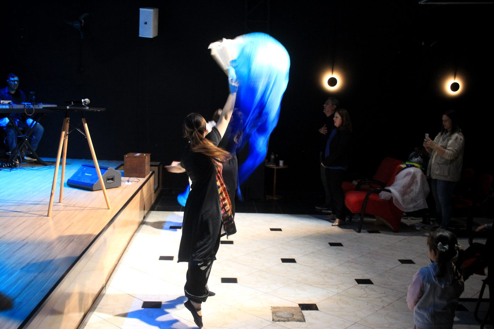

Missão
Alcançar vidas, cuidar de pessoas e famílias e compartilhar o amor de Jesus Cristo, promovendo relacionamentos saudáveis com Deus e com o próximo.

Nossa história
Uma comunidade de fé em Telêmaco Borba, desde 2016. Não caminhe sozinho.
Quem somos
A Comunidade Graça e Vida nasceu com o propósito de anunciar o Evangelho de Jesus Cristo, acolher pessoas e famílias e construir uma comunidade de fé fundamentada no amor de Deus, na comunhão e no cuidado com o próximo.
Ao longo de sua caminhada em Telêmaco Borba, no Paraná, a igreja tem buscado cumprir seu chamado de ser um ambiente onde vidas são alcançadas, famílias são fortalecidas e pessoas encontram oportunidades para desenvolver seu relacionamento com Deus.
Acreditamos que a Igreja é muito mais do que um lugar de reuniões e celebrações. É uma família espiritual, formada por pessoas diferentes, com histórias, experiências e realidades distintas, unidas pela fé em Jesus Cristo e pelo compromisso de viver os princípios do Evangelho.

Ninguém precisa caminhar sozinho. Há lugar para todos, há uma família para acolher e há uma esperança que transforma histórias.

Nossa caminhada
Nossa caminhada é construída por meio da adoração, da Palavra, da oração, da comunhão e do serviço. Por isso, valorizamos cada geração e incentivamos o desenvolvimento dos dons e talentos que Deus confiou a cada pessoa. Crianças, adolescentes, jovens, adultos e idosos têm espaço, voz e participação na construção dessa comunidade.
Entendemos que cuidar de pessoas também significa cuidar de suas famílias, caminhar ao lado de quem enfrenta dificuldades, oferecer acolhimento e criar oportunidades para que cada pessoa encontre seu lugar e propósito em Deus.
Nossa missão continua sendo alcançar vidas, restaurar famílias e compartilhar a esperança que encontramos em Cristo. Queremos ser uma igreja presente na cidade, relevante para a comunidade e comprometida com a transformação de pessoas por meio do amor de Deus.
Cremos em uma igreja que cresce em fé, amor e maturidade, que serve com humildade, caminha em unidade e mantém seus olhos voltados para Jesus.
Seguimos com a convicção de que ninguém precisa caminhar sozinho. Há lugar para todos, há uma família para acolher e há uma esperança que transforma histórias.
Somos a Comunidade Graça e Vida. Um lugar para todos.
Nossa identidade
Alcançar vidas, cuidar de pessoas e famílias e compartilhar o amor de Jesus Cristo, promovendo relacionamentos saudáveis com Deus e com o próximo.
Ser uma comunidade cristã que acolhe, transforma e desenvolve pessoas, sendo referência no cuidado com vidas e famílias e na manifestação do amor de Cristo na sociedade.
Ser uma igreja onde cada pessoa encontre acolhimento, pertencimento, cuidado e oportunidades para crescer em sua caminhada com Deus.
Marcos
Em 14 de janeiro, a Comunidade Graça e Vida é fundada em Telêmaco Borba.
De segunda a sábado, os grupos pequenos levam comunhão e cuidado para vários bairros.
O podcast leva conversas sobre fé e vida real para mais pessoas, e a igreja abraça a missão em Moçambique.
Conheça a missão →O selo com a cruz e as mãos e o slogan que resume quem somos: um lugar para todos.
Transparência
A Comunidade Graça e Vida é uma associação sem fins econômicos, inscrita no CNPJ 27.113.399/0001-73. Tem diretoria de sete membros eleita a cada ano, conselho de três membros e assembleia geral que se reúne todo mês de dezembro. Cada contribuição é cuidada com responsabilidade.
7
membros na diretoria
3
conselheiros eleitos
Domingo, 19h · Rua Independência, 259 · Centro · Telêmaco Borba